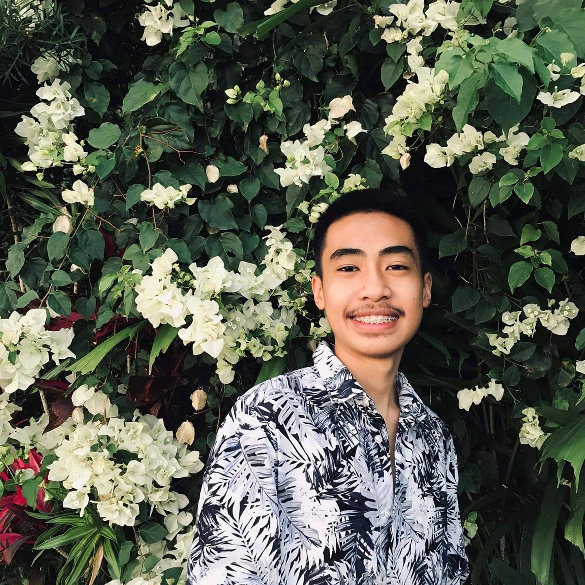
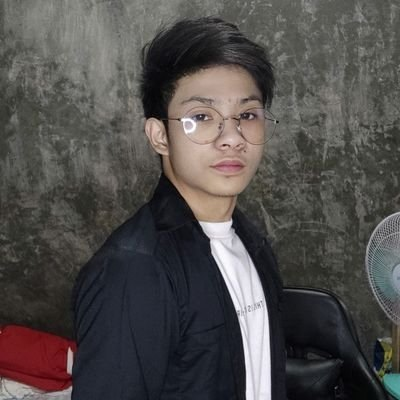
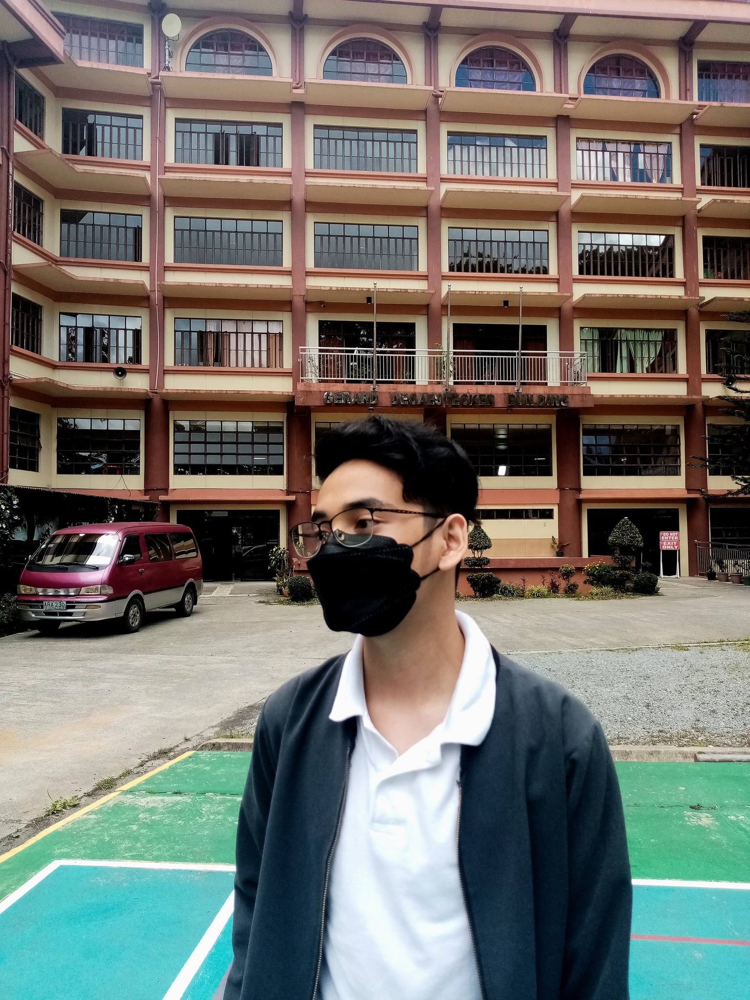
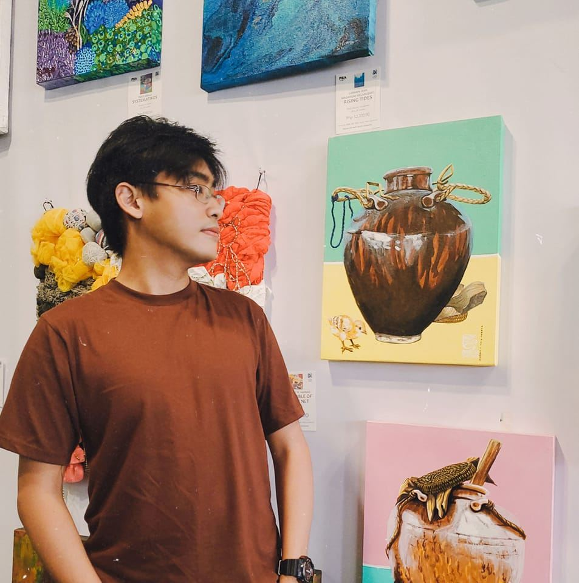
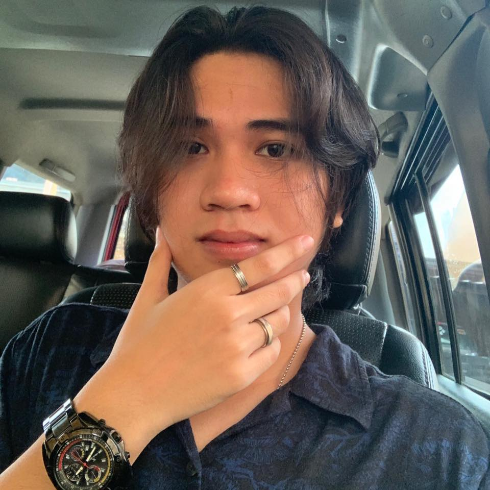

Charles Ancheta
Back-end developer
Charles is a programmer who produces server-side components and functionalities that are accessed
indirectly by a user via a front end application or system. He is in charge of developing,
maintaining, testing, and debugging the complete back end.

Jade Bonifacio
Front-end developer
Jade is in charge of creating new user-facing features, deciding the structure and style of web
pages, creating reusable code, optimizing page loading speeds, and creating web pages utilizing a
variety of markup languages.

Jerome Bustarde
Analyst
Jerome is in charge of creating, modifying, and maintaining large/complex computer systems. Analysis
and design approaches are applied to complicated computer systems. He provides the technical
framework for a variety of operations and project leadership, as well as coordination and
integration of others' work.

Enrico Castro
Architect
Enrico specializes in online application and solution design and development. Meeting with clients to
understand their needs and preferences, developing plans and frameworks, generating codes and other
materials, creating test structures to eliminate defects, maintaining thorough records, and setting
security measures and rules are among their responsibilities.
Lupin Garrido
UX designer/Graphic designer
Lupin is a professional who seeks for new possibilities to improve user experiences. Aesthetically
pleasant branding techniques enable them to reach more customers more successfully. He also ensures
that the entire journey with their products or services achieves the expected results.

Kurt Nudo
Project Manager
Kurt keeps the team focused on their various initiatives and helps to keep everything on track. He is
in charge of managing the budget, planning, and ensuring that the team is staffed with the greatest
people.

Marko Ramirez
The Quality Tester
Marko is crucial in delivering high-quality, error-free software and web applications to customers.
He tests and assesses new and current programs in order to detect and eliminate bugs, malfunctions,
and other user experience concerns.
